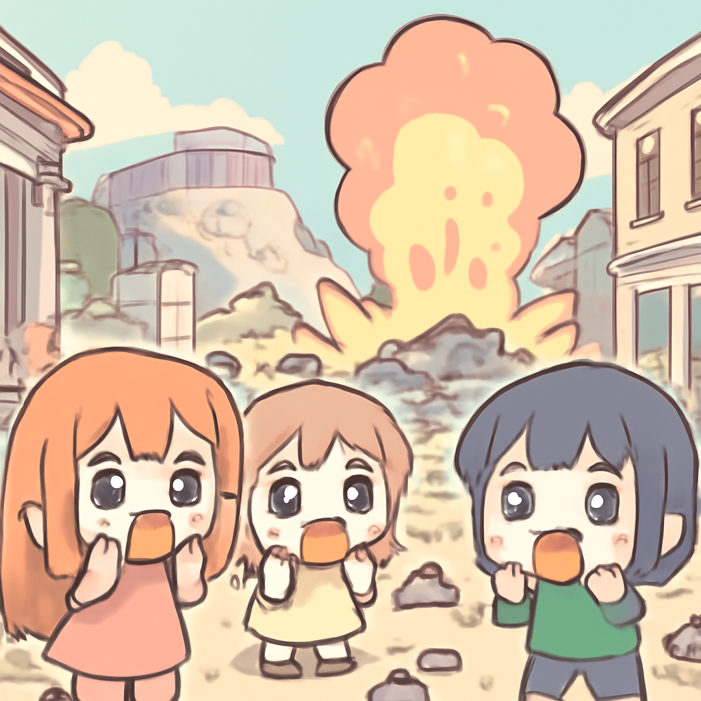

其一 · 希臘雅典 · 建築爆炸造成六人喪生
雅典一建築物疑似氣體爆炸，六人遇難。

在希臘雅典，當地時間昨日發生了一起建築物爆炸事故，造成六人喪生，受害者中包括四名美國公民及一名希臘國籍人士。這起事件可能由氣體泄漏引起，當局正在調查中。這次事故不僅令雅典的旅遊熱點受到影響，也讓人們對建築安全問題再次感到擔憂。希望政府能夠加強相關安全檢查，讓大家能安心旅遊。
🔗 原始新聞 ↗
2026-09-27 · 以古觀今，以笑抗愁
雅典一建築物疑似氣體爆炸，六人遇難。

在希臘雅典，當地時間昨日發生了一起建築物爆炸事故，造成六人喪生，受害者中包括四名美國公民及一名希臘國籍人士。這起事件可能由氣體泄漏引起，當局正在調查中。這次事故不僅令雅典的旅遊熱點受到影響，也讓人們對建築安全問題再次感到擔憂。希望政府能夠加強相關安全檢查，讓大家能安心旅遊。
🔗 原始新聞 ↗
特朗普拒絕伊朗協議，可能引發地區緊張。
在美國華府，特朗普最近宣布不再支持與伊朗的協議，並要求在七天內重新開放霍爾木茲海峽。這一舉動令伊朗外長回應，表示他們在等待調解者的明確意見。此舉可能導致中東地區的緊張局勢加劇，讓人不禁想問：特朗普的外交策略究竟是想建立還是破壞？只希望在這場外交較量中，各方能保持冷靜。
🔗 原始新聞 ↗
曼谷因持續大雨宣布緊急狀態。
泰國曼谷近日因連日大雨而宣布進入緊急狀態，市區多條道路被淹，交通癱瘓。當地居民頗為無奈，紛紛在社交媒體上發文求救。這場洪災不僅影響居民的日常生活，也可能對當地經濟造成影響。希望接下來的天氣能稍微好轉，讓大家能順利出行，畢竟在水上漂流可不是每個人都會的技能。
🔗 原始新聞 ↗
教宗在巴黎大眾彌撒中讚揚年輕人。
在法國巴黎，教宗於最近的一場露天彌撒中吸引了約70萬人參加，並對年輕人的活力與投入表示讚賞。這樣的盛況讓人想起，年輕人不僅是未來的希望，也是當下的力量。教宗的話語或許能激勵更多年輕人積極參與社會，讓我們一起期待未來的改變。或許巴黎的咖啡館可以開始準備更多的咖啡，因為年輕人的熱情可是需要好好滋養的！
🔗 原始新聞 ↗
加拿大總理尋求與中國及歐盟加強貿易關係。
在美國，加拿大總理正在積極尋找新的貿易夥伴，試圖深化與中國、印度及歐盟的關係。雖然這些努力看似美好，但專家指出，這些國家無法完全取代與美國的緊密聯繫。面對全球經濟的不確定性，加拿大的這一步驟顯得尤為重要，畢竟在經濟這場遊戲中，擁有多重出路才是王道！
🔗 原始新聞 ↗